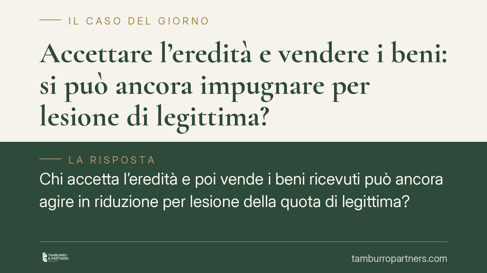

Accettare l'eredità e vendere i beni: si può ancora impugnare per lesione di legittima?
Chi accetta l'eredità e poi vende i beni ricevuti può ancora agire in riduzione per lesione della quota di legittima? La risposta dipende dal titolo: erede istituito o legatario in sostituzione di legittima. Nel secondo caso, la vendita del bene legato produce effetti decisivi, perché rende impossibile la rinuncia che condiziona l'azione. Un tema che tocca ogni successione con più legittimari.

Il problema
Alla morte di una persona, i familiari più stretti – coniuge, figli, in mancanza di questi i genitori – hanno diritto a una quota minima del patrimonio. È la cosiddetta *legittima* (o quota riservata). Se il defunto, con donazioni o testamento, ha attribuito ad altri più di quanto poteva, il legittimario leso può reagire con l'azione di riduzione: uno strumento che serve a recuperare quanto gli spetta.
La domanda pratica è questa: chi ha già accettato l'eredità e ha persino venduto i beni ricevuti conserva il diritto di lamentare la lesione? La risposta non è unica. Dipende da come il legittimario è stato chiamato alla successione.
Inquadramento normativo
Occorre distinguere due situazioni.
La prima: il legittimario è stato istituito erede, cioè chiamato a una quota dell'intero patrimonio. In questo caso l'accettazione dell'eredità – anche tacita, ai sensi dell'art. 476 c.c., che si realizza compiendo atti che presuppongono la volontà di accettare (come la vendita di un bene ereditario) – non estingue di per sé il diritto di agire in riduzione. L'erede può aver ricevuto meno della propria riserva e conservare il diritto di reintegrarla, nei limiti dell'art. 553 c.c. e dei termini di cui all'art. 564 c.c.
La seconda, ben diversa: il testatore ha assegnato al legittimario un legato in sostituzione di legittima ex art. 551 c.c. Qui il legittimario riceve un bene o una somma determinati *in luogo* della quota riservata. La norma gli concede un'alternativa: può conseguire il legato, rinunciando alla differenza; oppure può rinunciare al legato e chiedere la legittima, agendo in riduzione. Sono due strade che si escludono.
Perché la vendita è decisiva
Nel legato in sostituzione la scelta di rinunciare al legato è la condizione stessa dell'azione di riduzione. Ma la rinuncia presuppone che il legatario abbia ancora la disponibilità del bene.
Se il legatario vende il bene legato, compie un atto che manifesta la volontà di conseguire il legato e, allo stesso tempo, rende materialmente impossibile la rinuncia: non si può rinunciare a ciò di cui ci si è già spogliati. La conseguenza è che, con la vendita, il legatario perde la possibilità di agire in riduzione per la parte eccedente. Ha, di fatto, esercitato l'opzione a favore del legato.
Questa è la differenza sostanziale con l'erede istituito, per il quale la vendita di un bene ereditario resta un semplice atto di gestione del proprio compendio e non chiude la porta alla riduzione.
Implicazioni pratiche
Per chi si trova a raccogliere un'eredità con più aventi diritto, la lezione è chiara: prima di disporre dei beni ricevuti occorre capire *a quale titolo* si è stati chiamati.
Un errore frequente è trattare un legato in sostituzione come una normale quota di eredità. Il legatario che, senza riflettere, vende l'immobile ricevuto può scoprire troppo tardi di aver rinunciato irrimediabilmente a far valere una lesione ben più rilevante del valore del bene venduto.
Allo stesso modo, chi è coerede in una divisione (art. 735 c.c.) deve valutare con attenzione gli effetti di ogni atto dispositivo compiuto sui beni assegnati, perché alcuni comportamenti possono essere letti come accettazione o come scelta definitiva.
Il fattore tempo, poi, non va trascurato: l'azione di riduzione è soggetta a termini di prescrizione e a precisi presupposti procedurali, tra cui l'accettazione con beneficio d'inventario in alcune ipotesi.
Cosa fare in concreto
- Verifica il titolo della chiamata prima di ogni operazione: leggi il testamento e stabilisci se sei erede istituito o legatario in sostituzione di legittima.
- Non vendere i beni ricevuti finché non hai chiarito se intendi accettare il legato o rinunciarvi per agire in riduzione: la vendita del bene legato è spesso irreversibile sul piano dei diritti.
- Fai calcolare la quota di riserva e confrontala con quanto hai effettivamente ricevuto, per capire se esiste una lesione da reintegrare.
- Controlla i termini di prescrizione dell'azione di riduzione e le condizioni per esperirla, evitando decadenze.
- Raccogli la documentazione completa (testamento, donazioni pregresse, stime dei beni) prima di assumere qualsiasi decisione dispositiva.
Una valutazione anticipata, prima di compiere atti sul patrimonio, evita scelte irreversibili e consente di esercitare consapevolmente i propri diritti.
---
*Contributo informativo a cura di Tamburro & Partners - Avv. Giuseppe Tamburro. Non costituisce parere legale.*
Ogni famiglia ha il suo equilibrio.
Separazione, divorzio, affidamento, assegno: se vuoi un confronto riservato su una specifica situazione, scrivi allo studio. Ti rispondiamo entro un giorno lavorativo.